Два совершенно разных характера Лазурного берега в одном путешествии — от старых улиц Ниццы до княжеской Скалы, Monte-Carlo и Монако XXI века.
Забронировать экскурсию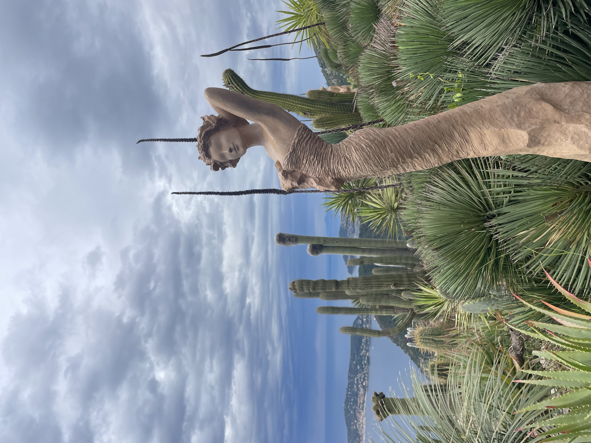
Ницца и Монако находятся совсем рядом, но рассказывают две совершенно разные истории Лазурного берега.
Мы начнём день в Ницце — городе, где итальянское прошлое, савойская история, Belle Époque и современная Франция существуют буквально на соседних улицах.
Затем отправимся вдоль моря в сторону Монако. Здесь сама дорога становится частью экскурсии: бухты, виллы, скалы и небольшие города помогают понять, как эта часть Средиземноморья превратилась в одну из самых знаменитых Ривьер мира.
Мы познакомимся со Старой Ниццей, Cours Saleya и историческим центром. Поговорим о греческих истоках города, многовековой связи с Савойским домом и о том, как в XIX веке Ницца стала французской.
А затем посмотрим, как сюда пришли европейская аристократия, зимние путешественники и новые деньги — и как маленький средиземноморский город превратился в знаменитый курорт.
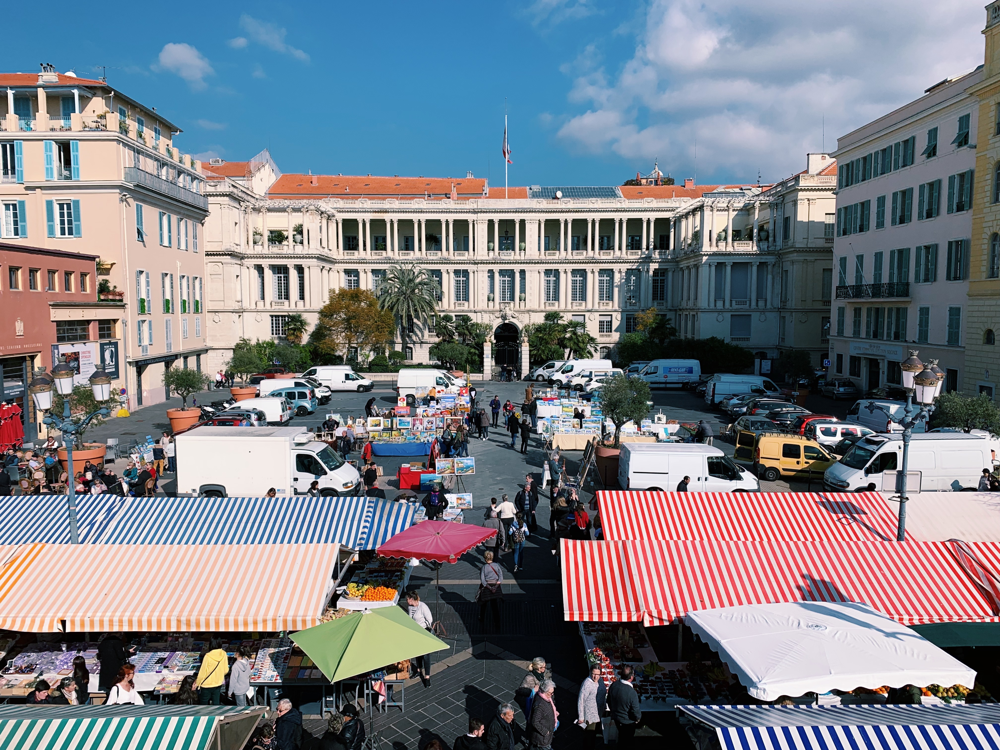
Из Ниццы мы отправимся в сторону княжества по одной из самых красивых дорог побережья. Здесь не хочется просто проехать из точки А в точку Б.
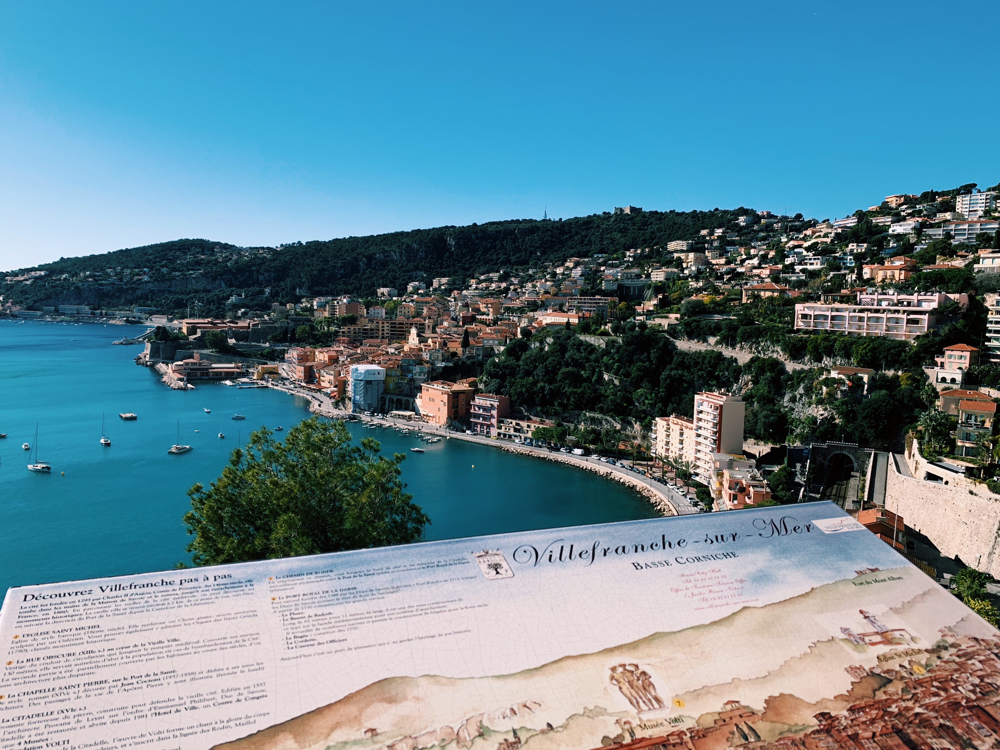
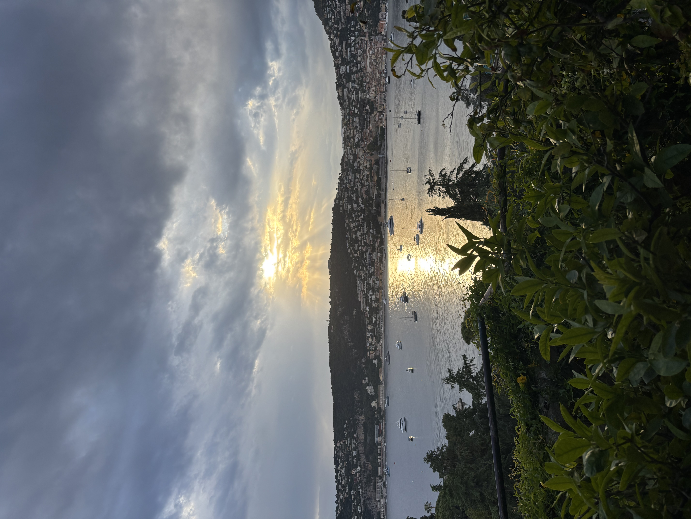
Остановимся у одной из самых красивых бухт побережья. Я расскажу, почему Вильфранш имел стратегическое значение как военный порт и почему именно с этим местом связаны важные страницы русской истории на Французской Ривьере.
Посмотрим на знаменитый полуостров и поговорим о том, как бывший рыбацкий берег превратился в один из самых престижных адресов Европы, а также какой след здесь оставили Жан Кокто и Беатрис Эфрусси де Ротшильд.
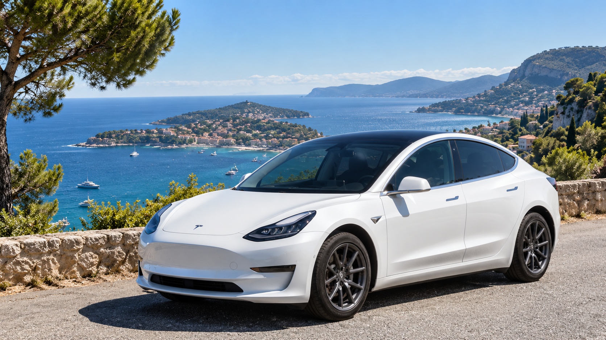
Экскурсия проходит в индивидуальном формате для компании до четырёх пассажиров. Между Ниццей и Монако мы передвигаемся на Tesla, делая остановки в самых интересных панорамных точках маршрута.
Такой формат позволяет не спешить, задавать вопросы и менять ритм дня в зависимости от ваших интересов.
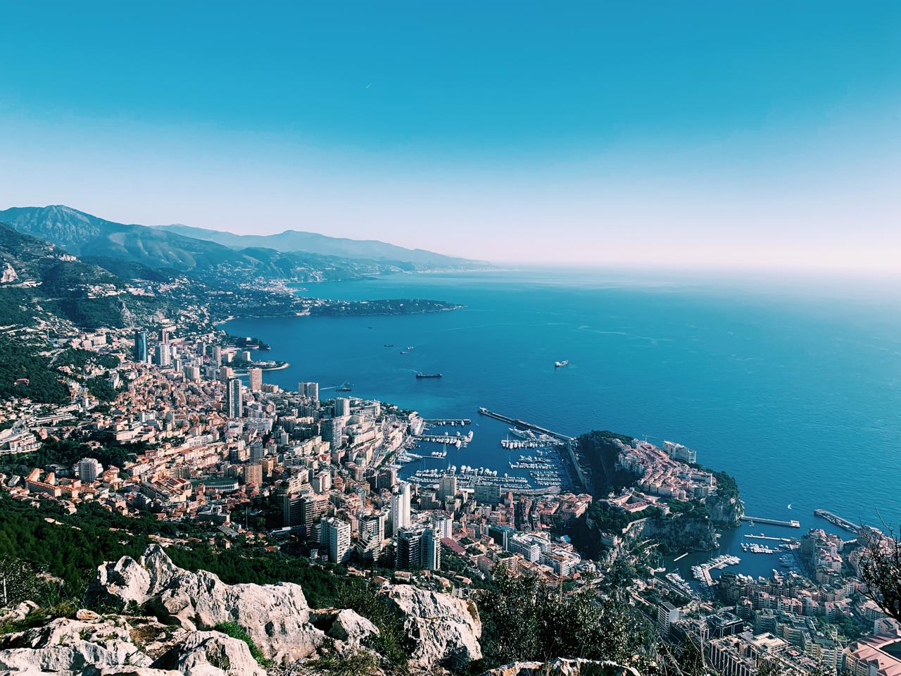
Начнём со старого Монако — Monaco-Ville. Здесь поговорим о происхождении княжества, династии Гримальди, политической истории маленького государства и его отношениях с Францией.
История Монако XX века невозможна без князя Ренье III и Грейс Келли. Поговорим не только о знаменитой истории любви, но и о том, как в их эпоху менялся международный образ княжества.
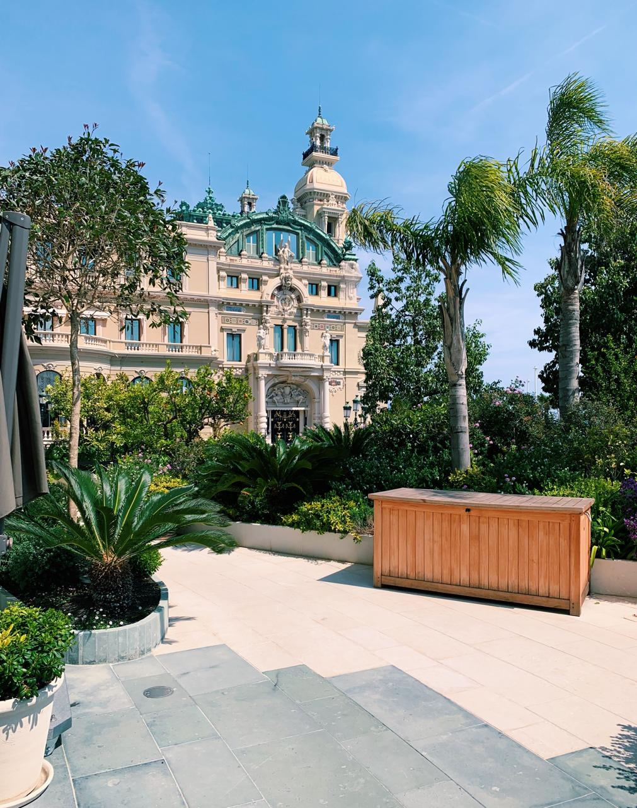
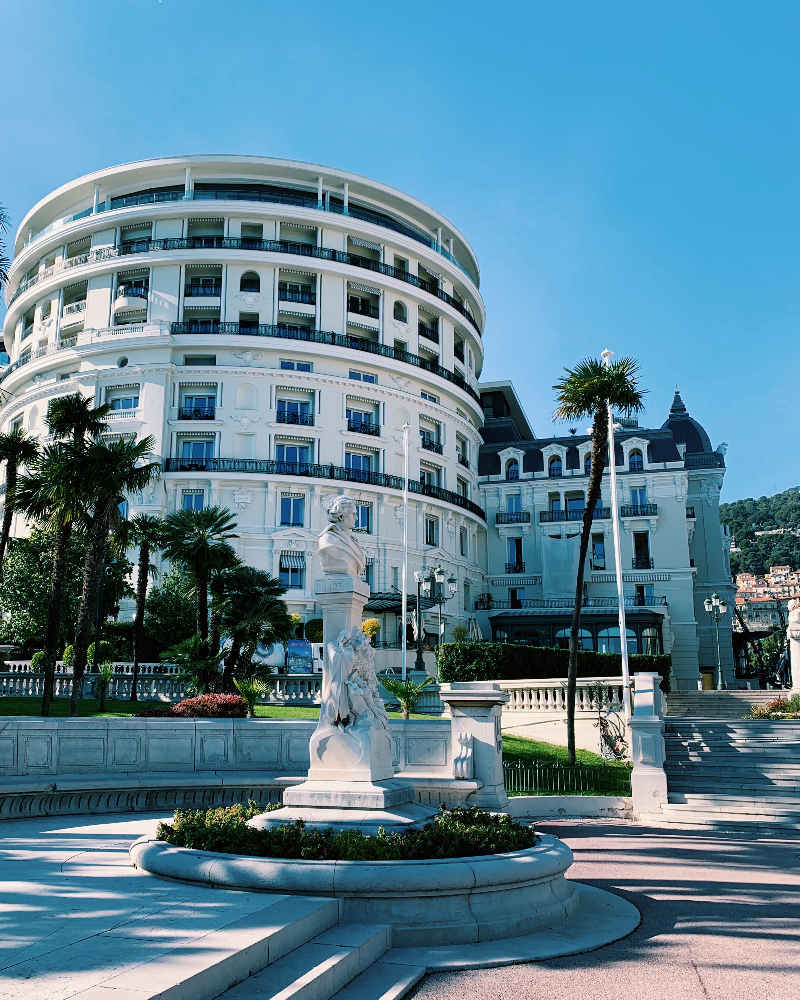
Увидим легендарную площадь Casino, Hôtel de Paris и современный One Monte-Carlo. Здесь особенно интересно проследить, как в XIX веке азартные игры помогли изменить экономическую судьбу княжества, а Monte-Carlo постепенно стал одним из самых узнаваемых адресов Европы.
Одной из изюминок нашей программы станет новейший район Монако, созданный прямо на море.
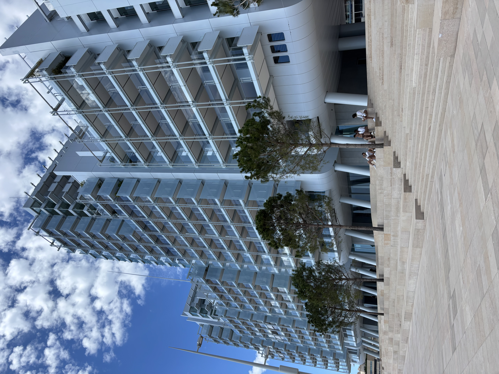
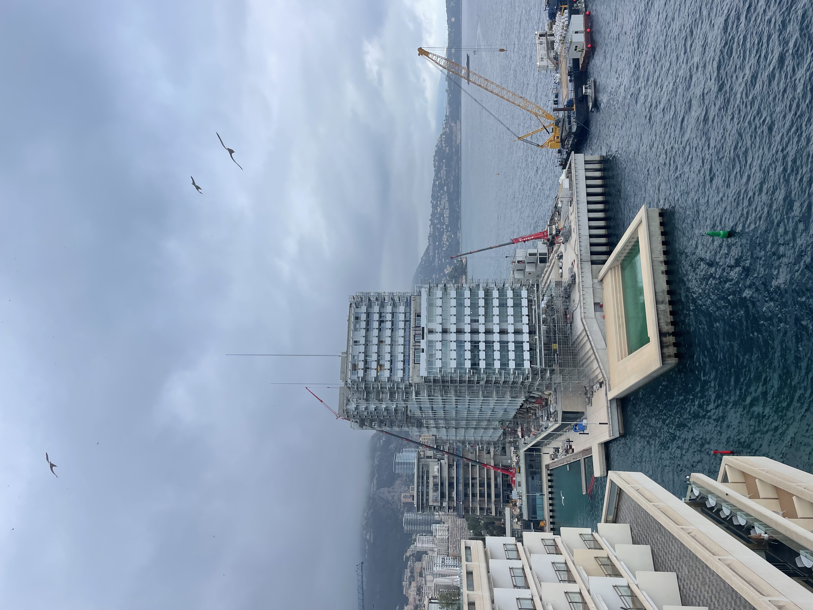
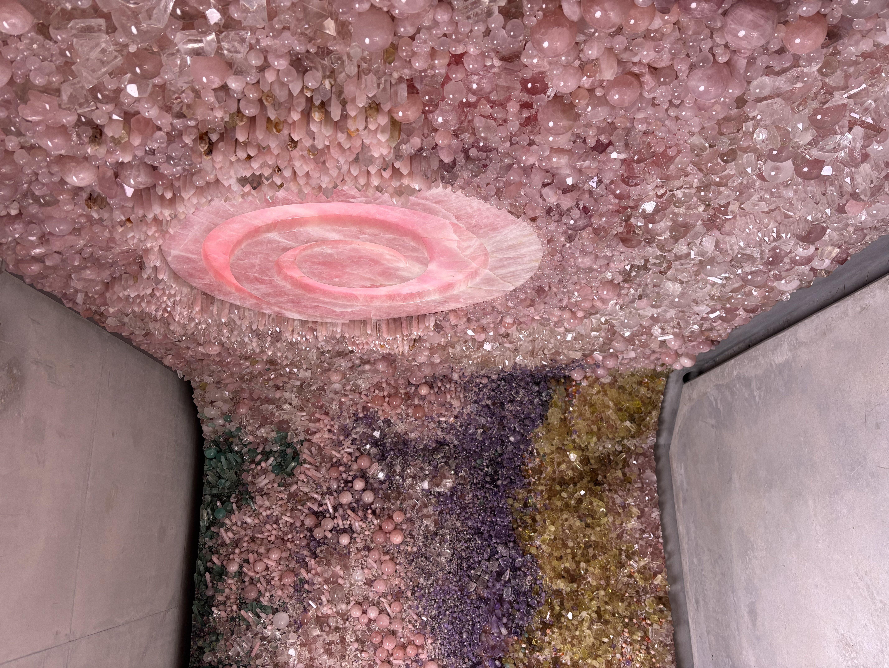
Мы разберёмся, как у моря отвоевали новую территорию, какие инженерные технологии использовали и почему при реализации проекта такое внимание уделялось сохранению морской экосистемы и биоразнообразия.
И именно здесь поговорим о более широкой теме: как Монако развивается при практически полном отсутствии свободной земли и почему расширение территории, недвижимость, международный капитал и экологическая политика оказываются частью одной стратегии развития.
Маршрут остаётся гибким: последовательность остановок может немного меняться в зависимости от дорожной ситуации, ваших интересов и ритма прогулки.
Индивидуальная экскурсия на русском языке. Около 6 часов · до 4 пассажиров · €500. Напишите мне дату поездки — я отвечу лично.
Написать в WhatsApp lara.lazarri@gmail.com